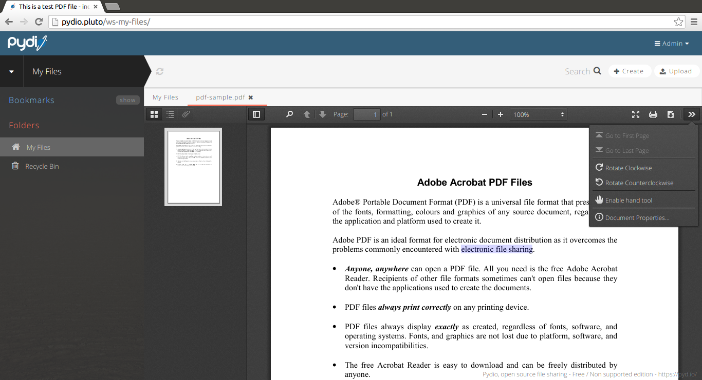

PDF.JS JavaScript PDF viewer from Mozilla beautifully integrated into Pydio.

If you want to have the viewer automatically open its sidebar with pages thumbnails, you have to manually apply this modification:
line 407 in "plug/editor.pdfjs/pdfjs/web/viewer.js", change 0 to 1 like this :
sidebarViewOnLoad: 1,